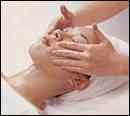
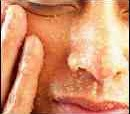
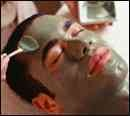
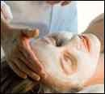
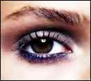
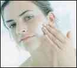
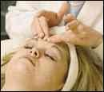
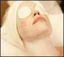

Gold Facial
The Gold Facial, based on Ayurveda, is a powerful anti-ageing treatment, with revitalizing and rejuvenating effects. Gold is one of the softest metals and is easily absorbed by the skin. It helps lymphatic drainage and facilitates the removal of toxins and wastes. It also stimulates blood circulation and improves skin elasticity, accelerating cell renewal and reversing oxidation damage.
Oxygen Facial
The Oxygen Facial provides instant revitalization, using the most powerful level of natural energy. It creates an enriched oxygen layer and helps to transport oxygen molecules directly into the skin. The antibacterial and germicidal action of Oxygen cream also inhibits bacteria and prevents skin problems. The facial infuses the skin with essential minerals and natural vitamins, providing ideal nourishment and bringing visible health, vitality and beauty to the skin.
 Anti-pigmentation Facial
In the Galvanic Facial, fruit and vegetable juices are used along with other formulations. These are rich in vitamins, minerals and enzymes. The Galvanic gadget is used, by which a steady, direct galvanic current is utilized, to introduce these water soluble substances through the skin. It heightens the skin’s capacity to absorb and improves the penetration of the products. It has a powerful nourishing and hydrating action on the skin, leaving it radiant and youthful.
Pearl Facial
Based on Ayurveda, the Pearl Facial uses products which contain powder of pearls. Research has revealed that pearls influence the transfer of melanin (natural pigment) to the skin surface, filtering the sun’s rays and counteracting sun damage. Pearls also contain powerful nutritive elements, like amino acids, minerals and proteins, which strengthen the skin and improve its moisture retention ability. The facial gives way to a healthy radiant skin, with an even colour tone.
Eye Treatment
The treatment is based on products which have been specially formulated for the delicate skin around the eyes. They help to revitalize and nourish the skin, removing lines, wrinkles and dark circles.
Anti Acne Facial
Anti acne facial is formulated to improve skin clarity and reduce acne blemishes while soothing redness and inflammation. This facial combines exfoliating enzymes, antioxidants, and hydrating agents to open clogged pores for deep cleansing and extraction without irritation. From severe acne to occasional hormonal breakouts, the Acne Facial delivers results for teens and adults.
 Aromatherapy Facial
In the Aromatherapy facial, essential oils are used. Essential oils have potent and specific curative properties that are of particular benefit to the skin. Most important of all, they are extremely effective for inducing relaxation of both body and mind, calming the nerves and reducing stress. The skin is massaged with herbalised oils that contain essential oil and herbal extracts. The elimination of toxins, improvement in the skin’s normal functions, including cell regeneration and the calming effect on the mind, all combine to make it totally revitalizing for both body and mind.
Thermoherb Mask
The Thermoherb Mask is a mini face-lift, which deep cleanses, restores balances and tightens the skin. Based on an ancient thermal mask, it has been improved with herbal extracts. The mask hardens, generates heat and creates the ideal temperature between itself and the skin, at which skin absorption is highly efficient. As it hardens, it tightens the pores, sculpting the facial contours, minimizing wrinkles and improving skin elasticity. The Thermoherb mask itself contains extracts of rose, basil and mint.
Deep cleansing Facial :- The deep cleansing Facial for oily and acne skins, to stimulate blood flow to the skin, oxygenate the skin, stimulate removal of toxins, meticulously extract blackheads and whiteheads, regulate oil production, purify and soothe the skin.
Lactic Nourishing Facial: This Facial is for dry and mature skin. Regain a youthful, luminescent glow with this luxurious facial – the perfect remedy for anyone experiencing dry skin, loss of elasticity, dullness, and/or hormonal breakouts. This facial provides immediate hydration to restore suppleness, texture, and tone, while aroma serum promotes cellular renewal to increase elasticity and diminish the appearance of fine lines. Your skin will look and feel dramatically softer, smoother, firmer and more radiant.
Detoxifying facial: Detoxifying facial enables in cleansing the pores thereby tightening & revitalizing the skin. It activates the circulation giving the skin a vibrant glow and removes all the toxins.
Time Revising Treatment Facial: Signature Spa skin firming facial treatment is a skin care treatment which helps to tighten wrinkle lines, blemishes & improves skin tone, color & texture. Its an instant face lifting & firming treatment that helps in staying young.
Instant Glow Facial: A quick, yet radiant and re-energizing - based treatment that will bring a dazzling softness and brightness to your face. This facial helps eliminate toxins from the skin and improves the elasticity of the skin. A special hydrating serum used in the facial decreases the skin cell melanin levels thus correcting darkened complexion and brown spots. Vitamin A and Vitamin C are used to help reduce the appearance of wrinkles and dark circles underneath the eyes.
Fruit facial : Natural healing properties of fresh fruits are used in our facial. Various ingredients ranging from honey to watermelon are specially selected for each particular skin type. Collectively the ingredients cleanse, exfoliate, moisturize and restore elasticity, leaving the skin glowing and supple after the treatment.